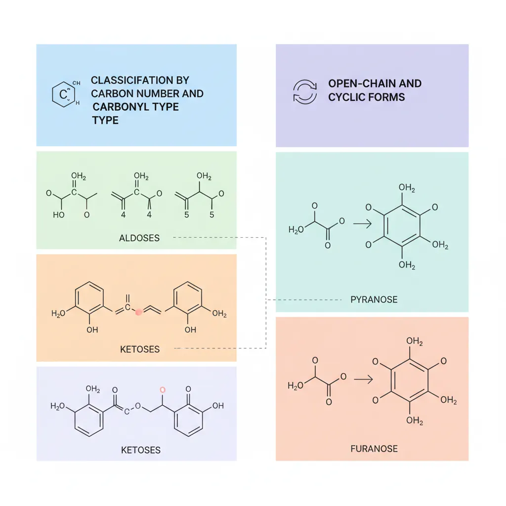
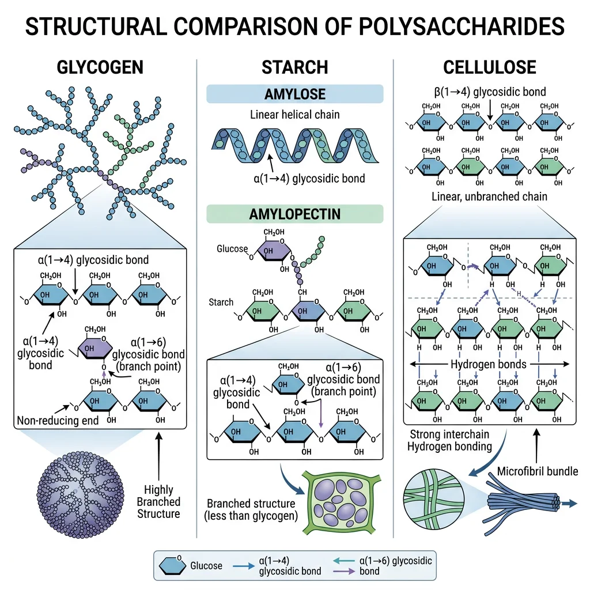
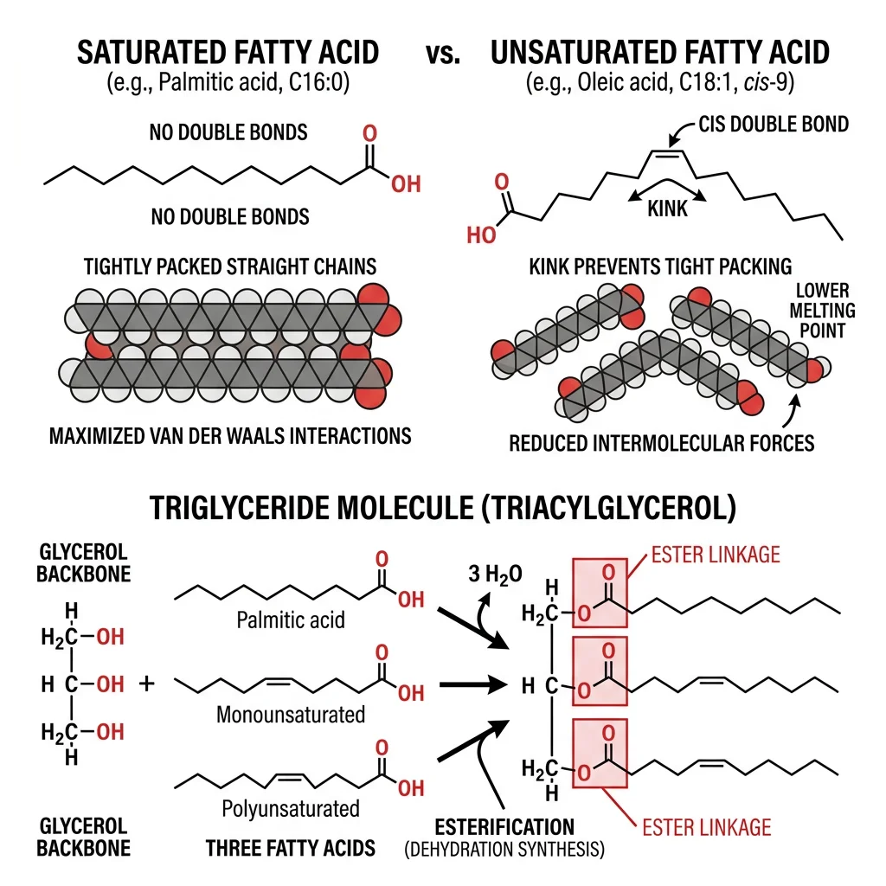
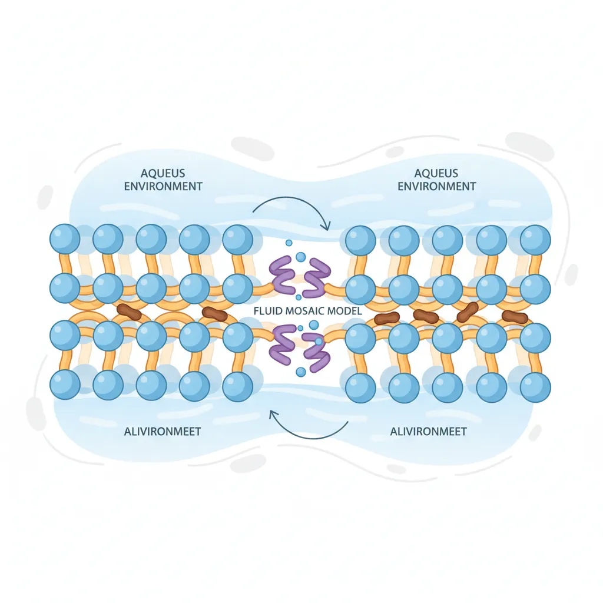
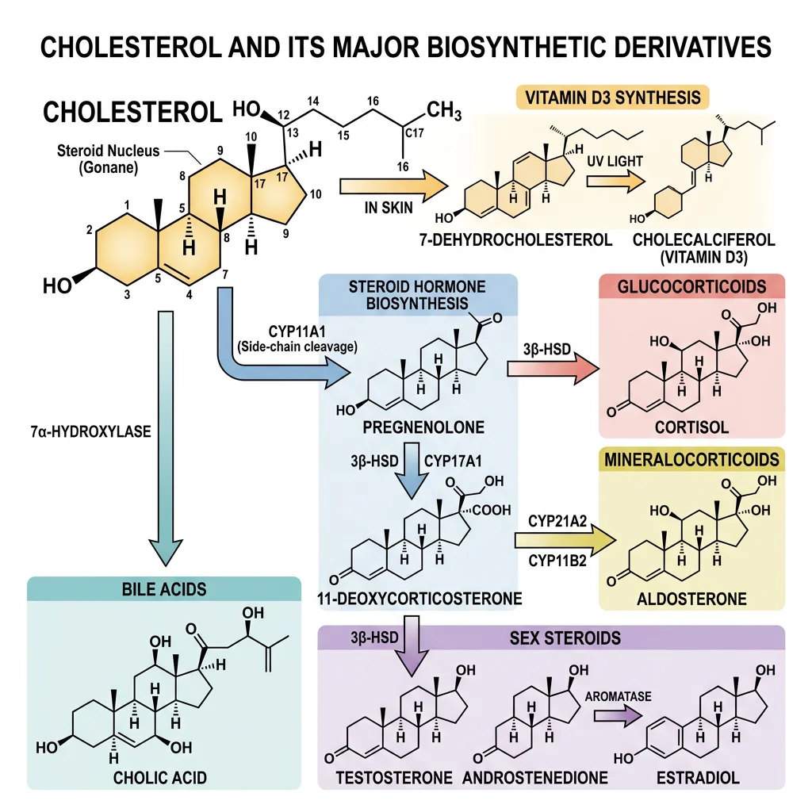

Biochemistry Mastery
Biological Chemistry Fundamentals
Atoms, bonds, functional groups, thermodynamicsWater, pH & Biological Buffers
Water polarity, pH, Henderson-Hasselbalch, blood buffersAmino Acids & Protein Structure
Amino acid classes, peptide bonds, protein foldingEnzymes & Catalysis
Kinetics, Michaelis-Menten, inhibition, regulationCarbohydrates & Lipids
Sugars, glycogen, fatty acids, cholesterol, membranesMetabolism & Bioenergetics
ATP, glycolysis, gluconeogenesis, redox carriersCitric Acid Cycle & Oxidative Phosphorylation
Acetyl-CoA, ETC, ATP synthase, oxygen dependenceSignal Transduction & Cell Communication
GPCRs, kinases, calcium, hormone cascadesNucleic Acids & Gene Expression
DNA, replication, transcription, translation, epigeneticsBrain & Nervous System Biochemistry
Neurotransmitters, ion gradients, myelin, neurodegenerationHeart & Muscle Biochemistry
Cardiac metabolism, actin-myosin, energy systemsLiver Biochemistry
Glucose homeostasis, detox, urea cycle, bileKidney Biochemistry & Acid-Base
pH regulation, ion transport, hormonal functionsEndocrine System Biochemistry
Hormone classes, signaling, glucose & stress controlDigestive System Biochemistry
Gastric acid, enzymes, bile, absorption, microbiomeImmune System Biochemistry
Antibodies, cytokines, complement, oxidative burstAdipose Tissue & Energy Balance
Triglycerides, lipolysis, leptin, obesityTissue-Specific Metabolism
Fed vs fasting, organ fuel selection, starvationMolecular Basis of Disease
Diabetes, cancer metabolism, neurodegenerationClinical Biochemistry & Diagnostics
Blood tests, liver/kidney markers, lipid panelsCarbohydrate Chemistry
Carbohydrates are the most abundant organic molecules on Earth, with the general formula (CH₂O)n — literally "hydrates of carbon." Think of them as biological solar panels: plants capture solar energy during photosynthesis and store it in glucose; animals then harvest that energy through cellular respiration. But carbohydrates are far more than just fuel — they form structural scaffolds (cellulose in plants, chitin in insects), serve as molecular identification tags on cell surfaces, and participate in critical signaling pathways.

Monosaccharides
Monosaccharides ("single sugars") are the simplest carbohydrates — they cannot be hydrolyzed into smaller sugars. They are classified by two characteristics: the number of carbon atoms (triose = 3C, tetrose = 4C, pentose = 5C, hexose = 6C) and the type of carbonyl group (aldose = aldehyde, ketose = ketone).
| Monosaccharide | Carbons | Type | Ring Form | Biological Role |
|---|---|---|---|---|
| Glucose | 6 (Hexose) | Aldose | Pyranose (6-membered) | Primary energy source; blood sugar; building block of glycogen, starch, cellulose |
| Fructose | 6 (Hexose) | Ketose | Furanose (5-membered) | Sweetest natural sugar; found in fruits; metabolized in liver |
| Galactose | 6 (Hexose) | Aldose | Pyranose | C-4 epimer of glucose; component of lactose; glycoproteins |
| Ribose | 5 (Pentose) | Aldose | Furanose | Backbone of RNA; component of ATP, NAD⁺, FAD, coenzyme A |
| Deoxyribose | 5 (Pentose) | Aldose | Furanose | Backbone of DNA (missing 2'-OH of ribose) |
| Glyceraldehyde | 3 (Triose) | Aldose | Open chain | Glycolysis intermediate (as G3P); simplest aldose |
| Dihydroxyacetone | 3 (Triose) | Ketose | Open chain | Glycolysis intermediate (DHAP); only achiral monosaccharide |
Stereochemistry of Sugars
Stereochemistry is why biology cares about the "handedness" of sugars. A molecule with n chiral centers has up to 2n stereoisomers. Glucose (4 chiral centers) has 2⁴ = 16 possible aldohexose stereoisomers — but only D-glucose is the primary fuel of life.
| Relationship | Definition | Example |
|---|---|---|
| Enantiomers | Mirror images; ALL chiral centers inverted | D-glucose vs L-glucose |
| Epimers | Differ at exactly ONE chiral center | D-glucose vs D-galactose (C-4); D-glucose vs D-mannose (C-2) |
| Anomers | Differ at the anomeric carbon (C-1) only | α-D-glucose vs β-D-glucose |
| D vs L | Configuration at highest-numbered chiral center | D-sugars: -OH on right in Fischer projection; L-sugars: -OH on left |
Emil Fischer — Deciphering Sugar Stereochemistry
Emil Fischer (Nobel Prize 1902) achieved one of the greatest feats of 19th-century chemistry: determining the relative configurations of all known aldohexoses using only chemical degradation and polarimetry — decades before X-ray crystallography or NMR existed. Fischer invented his famous projection formulas to represent 3D stereocenters on paper. His convention of placing the most oxidized carbon at the top became the standard for representing sugar structures. Fischer correctly assigned the configurations of D-glucose, D-mannose, D-galactose, and 13 other aldohexoses through systematic Kiliani–Fischer chain elongation and Wohl degradation reactions.
Disaccharides & Polysaccharides
Monosaccharides join together through glycosidic bonds — covalent links formed by a condensation reaction between the anomeric hydroxyl of one sugar and a hydroxyl of another. The type of glycosidic bond (α or β, and which carbon positions are linked) determines everything: digestibility, structural properties, and biological function. Think of it as LEGO blocks: the same pieces can build wildly different structures depending on how they snap together.

Sucrose, Lactose & Maltose
| Disaccharide | Components | Bond | Reducing? | Source / Notes |
|---|---|---|---|---|
| Sucrose | Glucose + Fructose | α1→β2 (both anomeric carbons linked) | No (non-reducing) | Table sugar; transport form in plants; hydrolyzed by sucrase |
| Lactose | Galactose + Glucose | β1→4 | Yes | Milk sugar; hydrolyzed by lactase; intolerance common in adults |
| Maltose | Glucose + Glucose | α1→4 | Yes | From starch digestion; hydrolyzed by maltase; beer brewing |
| Cellobiose | Glucose + Glucose | β1→4 | Yes | From cellulose digestion; β-bond = indigestible by humans |
Lactose Intolerance — A Story of Human Evolution
Most mammals lose the ability to digest lactose after weaning — the gene for lactase (LCT) is downregulated in adulthood, a condition called lactase non-persistence. This is the ancestral state. However, ~10,000 years ago, European and East African pastoralist populations independently evolved lactase persistence mutations (−13910*T in Europe, −14010*C in East Africa) that keep lactase production active into adulthood. This is one of the strongest recent examples of natural selection in humans — the ability to digest milk provided crucial nutrition in dairy-farming populations. Today, ~65% of the global population is lactose intolerant, but rates vary enormously: <5% in Northern Europe to >90% in East Asia.
Glycogen, Starch & Cellulose
Polysaccharides are polymers of hundreds to thousands of monosaccharides. The same monomer (glucose) builds radically different polymers depending on the glycosidic linkage:
| Polysaccharide | Monomer | Linkage | Branching | Function |
|---|---|---|---|---|
| Glycogen | Glucose | α1→4 (chain); α1→6 (branch) | Heavily branched (every 8-12 residues) | Animal energy storage (liver, muscle) |
| Starch (Amylose) | Glucose | α1→4 only | Unbranched helix | Plant energy storage; 20-30% of starch |
| Starch (Amylopectin) | Glucose | α1→4; α1→6 | Moderately branched (every 24-30 residues) | Plant energy storage; 70-80% of starch |
| Cellulose | Glucose | β1→4 only | Unbranched, straight chains | Plant cell walls; most abundant organic molecule |
| Chitin | N-acetylglucosamine | β1→4 | Unbranched | Arthropod exoskeletons, fungal cell walls |
| Hyaluronan | GlcUA + GlcNAc | Alternating β1→3, β1→4 | Unbranched (very long) | Joint lubricant; connective tissue; up to 25,000 disaccharide repeats |
Fatty Acids & Triglycerides
If carbohydrates are biological solar panels, lipids are biological batteries — they store more energy per gram (9 kcal/g vs 4 kcal/g for carbs) and are hydrophobic, meaning they pack tightly without water. Fatty acids are the simplest lipids: long hydrocarbon chains with a carboxyl group at one end. They are the building blocks of more complex lipids (triglycerides, phospholipids, sphingolipids) and serve as critical signaling molecules (prostaglandins, leukotrienes).

Saturated vs Unsaturated Fatty Acids
| Property | Saturated | Monounsaturated (MUFA) | Polyunsaturated (PUFA) |
|---|---|---|---|
| Double Bonds | None | One | Two or more |
| Chain Shape | Straight, tightly packed | One kink (30° bend) | Multiple kinks |
| Melting Point | High (solid at RT) | Moderate | Low (liquid at RT) |
| Examples | Palmitic (C16:0), Stearic (C18:0) | Oleic (C18:1 Δ9) | Linoleic (C18:2 ω-6), α-Linolenic (C18:3 ω-3) |
| Sources | Butter, coconut oil, meat fat | Olive oil, avocados | Fish oil, flaxseed, walnuts |
| Bond Geometry | N/A | Naturally cis | Naturally cis |
- Linoleic acid (C18:2, ω-6) → arachidonic acid → prostaglandins, thromboxanes
- α-Linolenic acid (C18:3, ω-3) → EPA → DHA → anti-inflammatory eicosanoids, brain development
Triglyceride Structure & Energy Storage
A triglyceride (triacylglycerol, TAG) consists of three fatty acid chains esterified to a glycerol backbone. Triglycerides are the primary form of energy storage in animals — they are stored anhydrously (without water) in adipocytes, providing ~6× more energy per unit mass than hydrated glycogen.
Why Fat Is the Superior Fuel Store
A 70 kg man stores approximately 15 kg of fat (135,000 kcal) vs 0.4 kg of glycogen (1,600 kcal). If all energy were stored as glycogen (which binds ~2g water per 1g glycogen), you would need to carry an extra ~55 kg of hydrated glycogen to match the same energy. Fat is also more reduced (more C-H bonds) than carbohydrates, yielding 9 kcal/g vs 4 kcal/g during oxidation. This is why migrating birds, marathon runners, and hibernating bears rely primarily on fat reserves — it's the most compact, lightweight energy source biology has evolved.
import numpy as np
import matplotlib
matplotlib.use('Agg')
import matplotlib.pyplot as plt
# Compare energy storage: fat vs glycogen vs protein
macronutrients = ['Fat\n(anhydrous)', 'Glycogen\n(hydrated)', 'Protein', 'Carbs\n(dry)']
energy_per_gram = [9.0, 1.3, 4.0, 4.0] # kcal/g (glycogen hydrated = ~1.3)
colors = ['#BF092F', '#3B9797', '#16476A', '#132440']
fig, (ax1, ax2) = plt.subplots(1, 2, figsize=(14, 5))
# Left: energy density comparison
bars = ax1.bar(macronutrients, energy_per_gram, color=colors, edgecolor='white', linewidth=1.5)
ax1.set_ylabel('Energy (kcal/g)', fontsize=12, fontweight='bold')
ax1.set_title('Energy Density by Macronutrient', fontsize=14, fontweight='bold')
for bar, val in zip(bars, energy_per_gram):
ax1.text(bar.get_x() + bar.get_width()/2, bar.get_height() + 0.2,
f'{val} kcal/g', ha='center', fontweight='bold', fontsize=11)
ax1.set_ylim(0, 11)
ax1.grid(axis='y', alpha=0.3)
# Right: body energy reserves (70 kg man)
stores = ['Fat\n(15 kg)', 'Muscle Protein\n(6 kg)', 'Liver Glycogen\n(0.08 kg)', 'Muscle Glycogen\n(0.35 kg)']
energy_kcal = [135000, 24000, 320, 1280]
colors2 = ['#BF092F', '#16476A', '#3B9797', '#132440']
bars2 = ax2.barh(stores, [e/1000 for e in energy_kcal], color=colors2, edgecolor='white', linewidth=1.5)
ax2.set_xlabel('Energy Reserve (× 1000 kcal)', fontsize=12, fontweight='bold')
ax2.set_title('Body Energy Reserves (70 kg adult)', fontsize=14, fontweight='bold')
for bar, val in zip(bars2, energy_kcal):
ax2.text(bar.get_width() + 1, bar.get_y() + bar.get_height()/2,
f'{val:,} kcal', va='center', fontweight='bold', fontsize=10)
ax2.set_xlim(0, 160)
ax2.grid(axis='x', alpha=0.3)
plt.tight_layout()
plt.savefig('energy_storage_comparison.png', dpi=150)
plt.show()
print("Fat provides ~85x more stored energy than glycogen")
print("9 kcal/g (fat) vs 1.3 kcal/g (hydrated glycogen)")
Phospholipids & Membrane Architecture
Phospholipids are the architectural foundation of every cell membrane. They have a split personality — amphipathic molecules with a hydrophilic "head" (phosphate group + polar head group) and two hydrophobic "tails" (fatty acid chains). This duality drives the spontaneous self-assembly of the lipid bilayer, one of the most important structures in biology.

Phospholipid Structure
| Head Group | Phospholipid Name | Charge at pH 7 | Biological Significance |
|---|---|---|---|
| Choline | Phosphatidylcholine (PC) | Zwitterionic (net 0) | Most abundant membrane phospholipid; lung surfactant (DPPC) |
| Ethanolamine | Phosphatidylethanolamine (PE) | Zwitterionic (net 0) | Inner leaflet of plasma membrane; autophagy signal |
| Serine | Phosphatidylserine (PS) | Net negative (−1) | Inner leaflet; exposed during apoptosis → "eat me" signal |
| Inositol | Phosphatidylinositol (PI) | Net negative | Cell signaling (PIP₂ → IP₃ + DAG); membrane trafficking |
| Glycerol | Phosphatidylglycerol (PG) | Net negative | Bacterial membranes; precursor of cardiolipin |
| Cardiolipin | (Diphosphatidylglycerol) | Net negative (−2) | Inner mitochondrial membrane; essential for ETC function |
Bilayer Self-Assembly & the Fluid Mosaic Model
When phospholipids are placed in water, the hydrophobic effect drives them to spontaneously form bilayers — a structure where the hydrophobic tails face inward (away from water) and the hydrophilic heads face outward (toward water). This is not "attraction" between tails; it's the entropic drive to minimize the organized water shell around hydrophobic surfaces.
The Fluid Mosaic Model — Membranes as Dynamic Structures
In 1972, S. Jonathan Singer and Garth Nicolson proposed the fluid mosaic model — membranes are not rigid walls but dynamic, fluid structures where proteins "float" in a sea of lipids like icebergs in an ocean. Integral membrane proteins span the bilayer; peripheral proteins associate loosely with surfaces. Lipids and many proteins are free to diffuse laterally (lateral diffusion: ~2 μm/sec) but rarely flip between leaflets (transverse diffusion or "flip-flop" is extremely rare without flippase enzymes). Modern updates include lipid rafts — cholesterol- and sphingolipid-enriched microdomains that serve as signaling platforms — and the recognition that the cytoskeleton constrains protein mobility more than originally thought.
- Unsaturated fatty acids → kinks prevent tight packing → ↑ fluidity
- Short fatty acid chains → fewer van der Waals contacts → ↑ fluidity
- Cholesterol → at 37°C, it restricts phospholipid movement (↓ fluidity); at low temp, it prevents crystallization (↑ fluidity). Cholesterol is the membrane's "fluidity buffer"
Cholesterol & Steroid Derivatives
Cholesterol is often vilified in popular media, but it is an absolutely essential molecule. Every animal cell membrane contains cholesterol (~30% of membrane lipids), and it serves as the precursor for steroid hormones, bile acids, and vitamin D. The problem is not cholesterol itself — it's the dysregulation of cholesterol transport that causes atherosclerosis.

| Steroid Derivative | Synthesized From | Function | Key Fact |
|---|---|---|---|
| Testosterone | Cholesterol → pregnenolone → DHEA | Male sex characteristics, muscle growth, bone density | Produced in Leydig cells of testes |
| Estradiol (E2) | Testosterone → aromatase | Female sex characteristics, bone maintenance | Aromatase inhibitors treat breast cancer |
| Cortisol | Cholesterol → pregnenolone → 17-OH-progesterone | Stress response, gluconeogenesis, anti-inflammatory | Cushing's = excess; Addison's = deficiency |
| Aldosterone | Cholesterol → progesterone | Na⁺/K⁺ balance, blood pressure regulation | Zona glomerulosa of adrenal cortex |
| Bile acids | Cholesterol → 7α-hydroxycholesterol | Emulsify dietary fats for absorption | 95% recirculated via enterohepatic cycle |
| Vitamin D₃ | 7-Dehydrocholesterol + UV light | Calcium absorption, bone mineralization, immunity | Technically a secosteroid hormone, not a vitamin |
Statins — The Cholesterol-Lowering Revolution
Akira Endo (2008 Lasker Award) discovered that a fungal metabolite, compactin (mevastatin), competitively inhibits HMG-CoA reductase — the rate-limiting enzyme in cholesterol synthesis (mevalonate pathway). This led to the development of statins (lovastatin, atorvastatin, rosuvastatin), the world's most prescribed drug class. Statins reduce hepatic cholesterol synthesis, prompting the liver to upregulate LDL receptors and clear more LDL from the blood. This reduces cardiovascular events by 25-35%. The statin story is a textbook example of how understanding a single enzyme's kinetics can save millions of lives.
Glycoproteins & Glycolipids
Cells wear a "sugar coat" called the glycocalyx — a dense forest of carbohydrate chains attached to membrane proteins (glycoproteins) and membrane lipids (glycolipids). These carbohydrate structures serve as molecular identification badges, enabling cell-cell recognition, immune surveillance, pathogen binding, and cellular communication.
| Feature | N-Linked Glycosylation | O-Linked Glycosylation |
|---|---|---|
| Attachment | To asparagine (Asn) in Asn-X-Ser/Thr sequon | To serine or threonine hydroxyl |
| Location | Begins in ER lumen (co-translational) | Golgi apparatus (post-translational) |
| Core Structure | 14-sugar precursor transferred en bloc from dolichol | Built one sugar at a time |
| Processing | Trimmed in ER, elaborated in Golgi | Elaborated in Golgi only |
| Example | Most secreted proteins, immunoglobulins | Mucins (mucus proteins), blood group antigens |
ABO Blood Groups — Glycolipids That Determine Transfusion Compatibility
Karl Landsteiner (Nobel Prize 1930) discovered that human blood can be classified into A, B, AB, and O groups based on glycolipid antigens on red blood cell surfaces. The A and B antigens are oligosaccharides attached to ceramide lipids in the RBC membrane. The difference between type A and type B is a single sugar variation at the terminal position: N-acetylgalactosamine for type A vs galactose for type B. Type O lacks both terminal sugars (it has the unmodified H antigen). Type AB has both. These glycolipid differences determine transfusion compatibility — a mismatch triggers catastrophic immune reactions (agglutination and hemolysis). A single sugar difference between life and death.
Practice Problems
Problem 1: Glucose and galactose are both aldohexoses with the formula C₆H₁₂O₆. What is their stereochemical relationship, and at which carbon do they differ?
Problem 2: Why can humans digest starch but not cellulose, even though both are polymers of glucose?
Problem 3: A phospholipid has one saturated C16:0 tail and one unsaturated C18:1 (Δ9) tail. Predict its behavior in a bilayer compared to a phospholipid with two C16:0 saturated tails.
Problem 4: Why is sucrose a non-reducing sugar while maltose is a reducing sugar?
Problem 5: During apoptosis, phosphatidylserine (PS) is exposed on the outer leaflet of the plasma membrane. Explain the normal asymmetry and why PS exposure is significant.
Carbohydrates & Lipids Worksheet
Carbohydrate & Lipid Analysis Tool
Complete the worksheet to analyze carbohydrate and lipid concepts. Download as Word, Excel, or PDF.
Conclusion & Next Steps
Carbohydrates and lipids are far more than just energy sources — they are the structural scaffolds, signaling molecules, and molecular identification tags that make cellular life possible. In this article, we explored:
- Carbohydrate chemistry — monosaccharide classification, ring formation, anomers, and Fischer's stereochemical legacy
- Disaccharides and polysaccharides — how glycosidic bond type (α vs β) dictates digestibility and function, from energy-storing glycogen to structural cellulose
- Fatty acids and triglycerides — saturated vs unsaturated, cis vs trans, essential fatty acids, and why fat stores 6× more energy per unit mass than glycogen
- Phospholipids and membrane architecture — amphipathic molecules that self-assemble into bilayers, the fluid mosaic model, and membrane fluidity control
- Cholesterol and steroid derivatives — the essential precursor to hormones, bile acids, and vitamin D, and the statin revolution in cardiovascular medicine
- Glycoproteins and glycolipids — the sugar coat of cells that enables recognition, immunity, and tragically, pathogen entry
These biomolecules set the stage for metabolism — the vast network of enzyme-catalyzed reactions that build, break down, and transform these molecules to sustain life. Understanding their structures is prerequisite to understanding their fates in metabolic pathways.